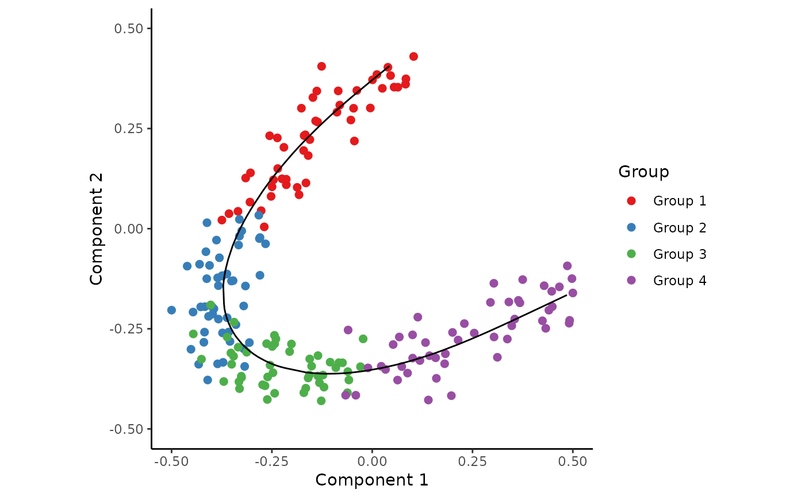
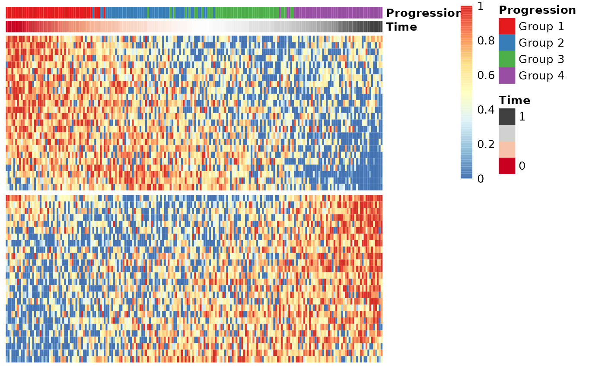

extract_modules uses adaptive branch pruning to extract modules of features,
which is typically done on the smoothed expression returned by gene_importances.
Arguments
- x
A numeric matrix or a data frame with M rows (one per sample) and P columns (one per feature).
- time
(Optional) Order the modules according to a pseudotime
- suppress_warnings
Whether or not to suppress warnings when P > 1000
- verbose
Whether or not Mclust will print output or not
- ...
Extra parameters passed to
Mclust
Value
A data frame containing meta-data for the features in x, namely the order in which to visualise the features in and which module they belong to.
Examples
## Generate a dataset and visualise
dataset <- generate_dataset(num_genes=300, num_samples=200, num_groups=4)
expression <- dataset$expression
group_name <- dataset$sample_info$group_name
space <- reduce_dimensionality(expression, ndim=2)
traj <- infer_trajectory(space)
time <- traj$time
draw_trajectory_plot(space, path=traj$path, group_name)

## Select most important genes (set ntree to at least 10000!)
gimp <- gene_importances(expression, traj$time, num_permutations = 0, ntree = 1000)
gene_sel <- gimp[1:50,]
expr_sel <- expression[,gene_sel$gene]
## Group the genes into modules and visualise the modules in a heatmap
modules <- extract_modules(scale_quantile(expr_sel))
draw_trajectory_heatmap(expr_sel, time, group_name, modules)
